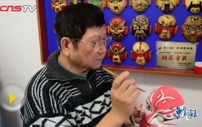

桂剧

桂剧是发源于桂林，流行于桂北广大城乡的地方剧种之一。是广西各族人民喜闻乐见的主要地方剧种之一。桂剧唱腔，以弹腔为主体，兼有高腔、昆腔、吹腔和杂腔小调。桂剧伴奏乐队，分文、武两场。桂剧用桂林方言演唱，声调优美，抑扬有致。表演质朴细腻，唱腔委婉动人。
桂剧唱腔，以弹腔为主体，兼有高腔、昆腔、吹腔和杂腔小调。弹腔音韵格律与京剧大体相同，属皮黄系统的板腔体，分南路(京剧二黄)和北路(京剧西皮)两大类，并各有反调"阴皮"和"背弓"。北路高亢雄壮，南路委婉低沉，阴皮则略带凄婉悱恻。高腔，源于弋阳腔，是一种由曲牌缀合组成的曲牌体，曲调高亢、悲壮。昆腔，即昆曲，曲调委婉低回，格律比较严格。吹腔，有笛子伴奏的"安庆调"和唢呐伴奏的"七旬半"、"五句半"、"三句半"，曲调诙谐、轻快，多插入弹腔使用。 桂剧伴奏乐队，分文、武两场。文场以胡琴(京胡、二胡)和弹拨器(月琴、三弦)为主，称为"三大件"，间用笛子、唢呐。武场有战鼓、桂锣、小锣、钹等，其中以桂锣最有特色。 桂剧用桂林方言演唱，声调优美，抑扬有致。表演质朴细腻，唱腔委婉动人，犹如一江漓水，清澈明亮，又如一树桂花，馨香扑鼻，具有浓郁的乡土气息。若有机会到桂林旅游，切莫错过对桂剧的欣赏。